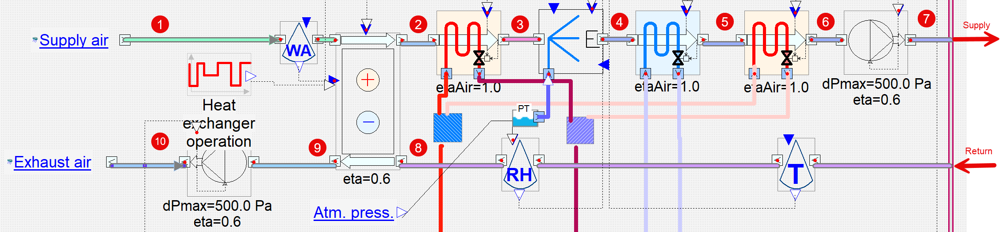

2026 simulation viewer
Evaporative humidifier and cooling dehumidification with return-air control
Loading bundled demo scenarios…
Baseline scenarioChoose a preloaded demo scenario
Variant scenarioOptional overlay at the same simulation hour
AHU arrangement
Air-handling-unit schematic

Selected simulation time
Loading…Supply path · points 1–7
Psychrometric process
Supply processComparison processPoint 7 → 8 · room/return path
Annual behaviour
Outdoor, supply and return conditions
Temperatures · full year
Outdoor · point 1Supply · point 7Return · point 8
Relative humidities · full year
Outdoor · point 1Supply · point 7Return · point 8
Air mass flow · full year
Outdoor · point 1Supply · point 7Return · point 8Exhaust · point 9
Scenario analysis
Derived operating modes
Select a row to highlight every occurrence in the annual charts.
| Operation mode | Time | Share |
|---|